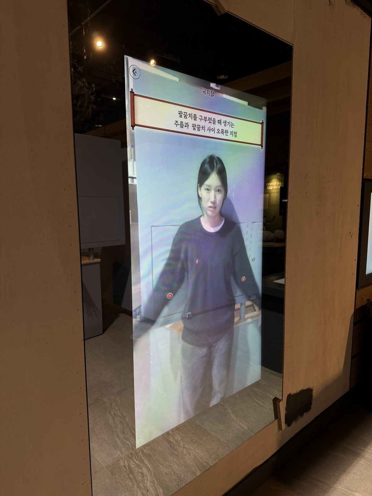
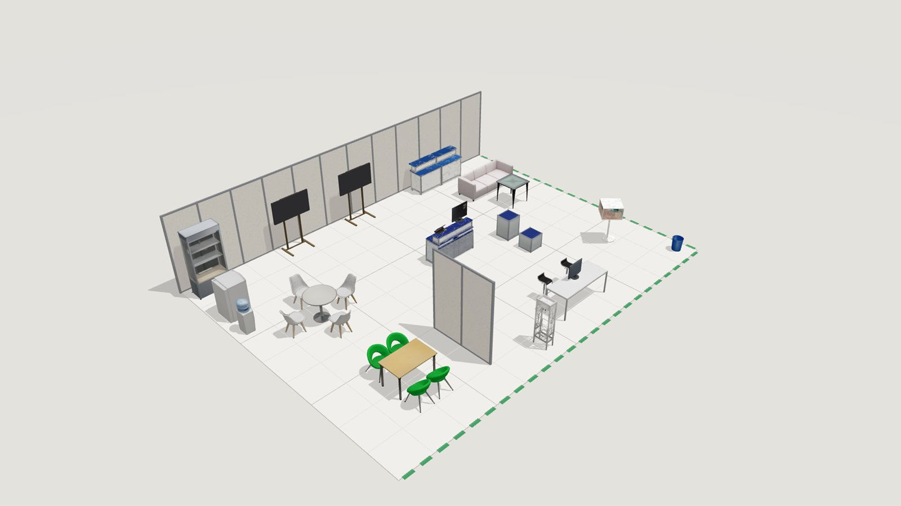
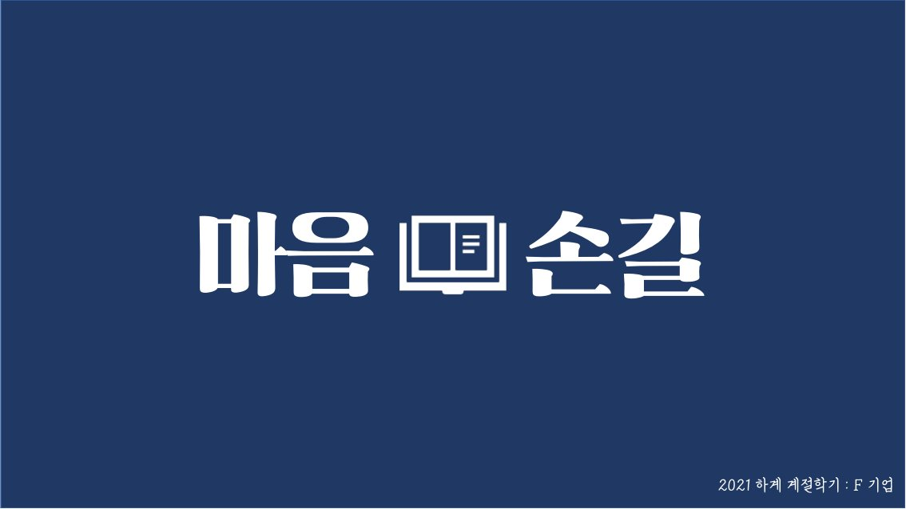
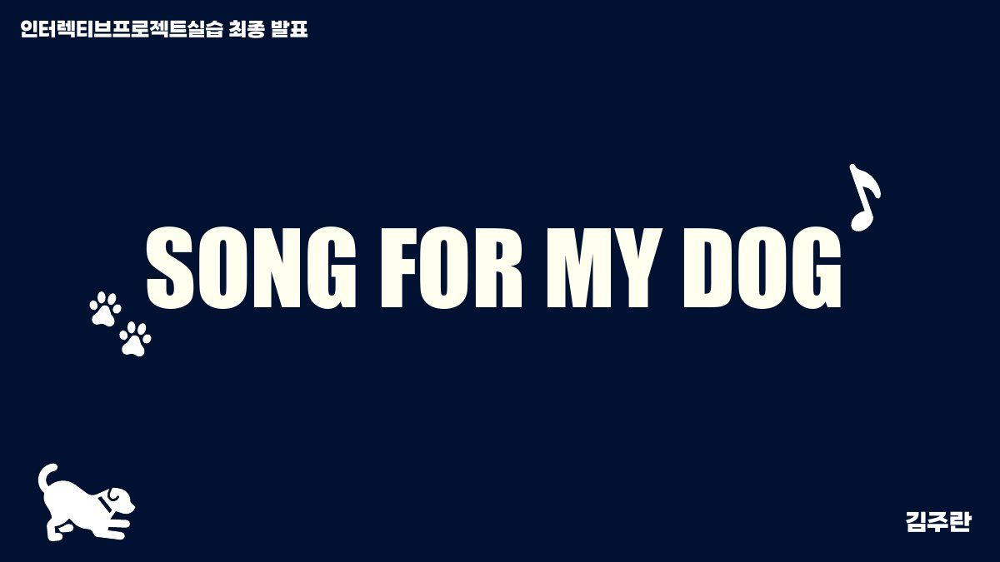
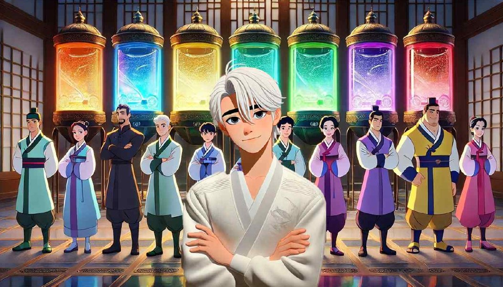

PROJECTS
프로젝트

2025 · 박물관 전시
AI 실시간 트래킹 프로젝트
몸을 실시간으로 추적하는 트래킹 기술로 한방 침자리 체험과 미니게임들을 만들었고, 국립중앙박물관과 국립과천과학관 전시까지 이어졌습니다.

2026 – · 쿼레이트
CoSpace 공간 배치 시각화
가구에서 공장 라인, 전시 부스, 선박 내부까지 3D로 배치해 보는 공간 시각화 도구입니다.

2024 – 2025 · LUL 창립작 · 팀장
산군
조선시대를 배경으로 한 미스터리 방탈출 어드벤처. 직접 만든 팀 LUL에서 10명과 함께 만든 첫 작품입니다.

2023 · 컴퓨터그래픽스와 딥러닝
메쉬 피팅 · DQN 강화학습
구를 고양이·거미 모양으로 바꾸는 메쉬 최적화와, 달 착륙선을 DQN으로 착륙시키는 실험을 했습니다.

2024 · DreamBooth · 개인화 이미지 생성
대학생 ‘티니핑’ 만들기
애니메이션 ‘티니핑’ 약 140종의 이미지를 학습해, 이름과 특징만 넣으면 같은 화풍의 새 캐릭터를 그려 주는 개인화 이미지 생성 모델을 만들었습니다.

2021 · 창업 · 하드웨어 시제품
마음손길 · 전자 점자 태블릿
시각장애인이 태블릿에서 점자를 읽고 쓸 수 있도록 만든 전자 점자 태블릿 시제품입니다. 2021 하계 계절학기 ‘4차 산업혁명 기술과 창업’에서 팀으로 진행했습니다.
2025 · 단독 개발
AI와 끝말잇기
AI 캐릭터 ‘Wordy’와 목소리로 끝말잇기를 주고받는 대화형 게임입니다.

2025 · C++ · SDL2 · 3인
Code:Black
상용 엔진 없이 C++와 SDL2로 렌더링부터 충돌까지 직접 만든 2D 액션 어드벤처입니다.

2023 · 스토리보드 · 애니매틱
Frozen Murder
가족 판타지 ‘겨울왕국’을 탐정 올라프가 이끄는 추리 스릴러로 바꾼 장르 전환 작업입니다.

2025 · 모션그래픽 · After Effects
Song for My Dog
반려견 레오를 주인공으로 한 1분짜리 세로형 모션그래픽 숏폼입니다. 직접 그린 레오 일러스트를 생성 모델에 학습시켜 장면별 포즈를 만들었습니다.

2024 · 스토리 · 웹툰 기획
인생학 이수
번아웃에 빠진 도깨비 공무원 ‘이수’가 인간 세계를 여행하며 자신의 색을 되찾아 가는 모험 판타지입니다.